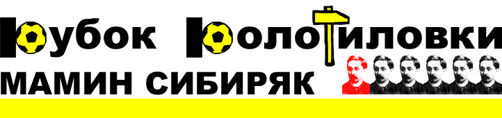

|  |
Комментарии тренеров к третьему игровому днюГруппа ЩТренер "MO4A HA nEPEnPABE" Паули Лампила: Ну что ж, как говорят в народе, не было несчастья, да несчастье помогло. Жизнь продолжается, и надо идти ближе. А ближе всего у нас второй матч с "Киксой", которой мы со злости дадим такого ядерного гриба, что мало не покажется даже тем, кто не верит в его существование. После потерпленной неудачи понимаем, что пиздеть вслух - себе дороже надо было продавать Млинчака, и ничего бы тогда не было. А так польский лев рвется в бой с "киксорезами" и грозится положить им два гола лично. Но это только после того, как порезы на жопе за живут. Берегите себя. Тренер "FC MEKAY" Жан Деспрес: Группа ЮТренер "KOKALLIKuHbI KAHuKy/IbI" Роман Ярно: Теперь - короткой строкой о поединках третьего тура группового этапа Молодильни. Ну, во-первых, меня не может ни радовать, что главным критиком моей дружины является специалист, который не в состоянии прочесть по-русски и элементарно выбрать из числа игроков собственной команды 11 дееспособных футболистов на решающий поединок в группе. Как говорится, прежде чем пиздеть, извольте хотя бы выучить алфавит. Надеюсь, данный инцидент послужит хорошим уроком для всех, кому влом зайти на официальный сайт турнира и элементарно посмотреть, кто дисквалифицирован, кто лидирует в Трофее Громилы и что нового настрочил давеча ночью ксендз Моисейка. Очень удивил и поединок "маршаков" с "рыбаками", где уже в середине первого тайма в обеих командах началась суматоха, и уровень организованности соперников упал до "недостаточно". Честно говоря, по-моему пора вводить квалификационный этап в Кубке колотиловки, чтобы в основную сетку турнира не выходили всякие "Б-36", "Слимы" да "Дюделанжи". Безумно порадовала победа "Спартака", который уже шагнул в четвертьфинал, с чем хочется его искренне поздравить. Нам же в следующую среду предстоит решающая игра с "Да Бойз", по итогам которой один из двух прошлогодних финалистов Кубка колотиловки отправится в дальнее странствие за жабрами. Хочу пожелать удачи своему коллеге и выразить надежду, что этот матч будет честным и пройдёт в спортивной борьбе. Ну а триумф "шкурки" над "смрадом" интересен разве что любителям статистики - согласитесь, что при первом же столкновении любого из этих клубов с серьёзным соперником надобность воспевать оду Латушке исчезнет сама собой. Спасибо за внимание. Тренер "FC Spartak Seattle" Ангелантонио Ианноморелли: Теперь пару слов о других встречах. Победа "маршаков" была обеспечена в ту самую секунду, когда тренер "рыбных" решил сыграть по схеме 3-4-3 с использованием контратак. Немного удивила "шкурка", которая наконец-то взяла реванш у своего главного обидчика "смрада". Конечно, можно рассуждать о том, что соперники находились немного в неравных условиях, но это никак не умоляет достоинств победителя. И наконец, встреча "мекая" с "мочей". Глубоко возмущен решением оргкомитета отменить результат встречи и засчитать "переправляющимся" техническое поражение со счетом 0:3. Напомню, что когда во время матча стало известно, что наставник "мочи" обоссался при выборе состава, абсолютное большинство менеджеров, среди которых были и два из двух представителя оргкомитета, согласились с тем, что если "крякающие" выиграют в три мяча или больше, то в любом случае результат останется в силе. Особо отмечу, что на момент принятия коллегиального решения на табло горели нули. Также сообщу, что оставлять результат в силе, в случае если пострадавшая сторона выиграла с разницей в три мяча или более - это общепринятая практика в мировом футболе. Поэтому сейчас сетования оргкомитета на регламент выглядят по меньшей мере подозрительно, с учетом того, что форвард Георгосопулос имел реальный шанс уйти далеко вперед в споре лучших бомбардиров молодильни. Принимая такое решение, уважаемый оргомитет встал на сторону провинившегося, который не только не понес заслуженного наказания (ведь он так и так въебал в три мяча), но и наоборот извлек выгоду, сохранив шансы на выигрыш трофея Игоря Нетто. В то же время, пострадавшая сторона, не только не получила компенсации, но и наоборот, лишилась абсолютно заслуженного результата, очков в Кубке Громилы и голов левоногого Нетто. Конечно, по большому счету всем похуй. Просто немного обидно, что решение принималось не исходя из элементарной логики, справедливости и мнения абсолютного большинства участников, а согласно регламенту, в котором, очевидно, подобная ситуация не была предусмотрена перед началом сезона. К тому же, решение это в корне противоречило устной договоренности, которая была достигнута участниками Колотиловки (среди которых также были оба представителя оргкомитета) по ходу игры. End of file. Тренер "FC BA Boyz" Диллон Ракнитц: Матч оставил двойственные ощущения. С одной стороны мне пофиг на результат, а с другой - прогрывать при равном количестве созданных моментов всегда обидно. Остается поздравить спартачей с хорошей реализацией и пожелать им удачи в 1/4 финала. Мы же еще поборемся с "Кокахами". Задача минимум - накостылять греку. Группа ЭТренер "FC Zivju Fileja" Дарко Оцоколич: По поводу технического поражения Мочи - у нас самих Макар Камалетдинов сидел на скамейке запасных и кричал, мол выпустите меня на поле, я играть хочу! Но спасибо маршалам за бескровную игру. Впервые в этом году, мои игроки уходят с поля целыми. Тренер "FC Marshal Riga" Стиг Хагер: Группа ЯТренер "LLIKypKa oT con/Iu" Марко Фассари: Тренер "Bender Selection" Поль Монтанье: млинчак комом: несовершенство регламента лишило пфекаев лучшего бомбардира турнира - кипросопопулос потел зазря. а матч, меж тем, начинался многообещающе. но, прознав о прозеве тренерского штаба, мочевики решили поберечь силы и...въебали. в общем, хуй знает, расстраиваться мочевикам или радоваться. по пиментам равенство: кому надо расстраиваться - так это менеджерам да бойз. в отсутствие хомяков и в присутствие однозвездного эклера эта команда была унижена спартаковцами. не сразу и не раз. спартаковцы, впрочем, редко унижают сразу. тем более, что по пиментам было равенство до поры. однако снова не было кости. это хуево. опять же. чуть не забыл: простите, но это, блядь, очень блеклый перфоманс. половину отчета занимает бесполезный инсайд про тактический гений обоих наставников. похоже, филейным пора примерить жабры. ибо "ибо" из нашей группы при желании над рыбниками обязательно поздевается. с другой стороны, именно этот матч принес мне лат. и это хорошо. Тренер "Vot tak smrad" Педро Алмейда: P.S. А вот любителям неадекватных пасквилей желаю неожиданно вытащить из школы вратаря "хорошо" или нападающего "сносно". Последнего вполне можно спихнуть на рынке тысяч за 200-250. Зато на три звезды играет и вратарь "недостаточно", а главное забивной. Вы же прекрасно понимаете как это важно. |